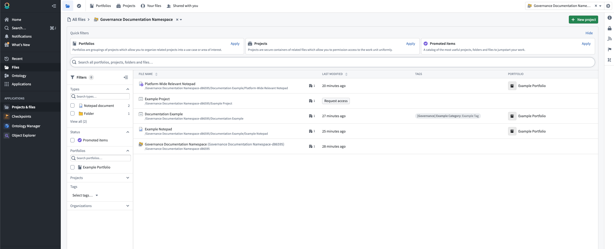
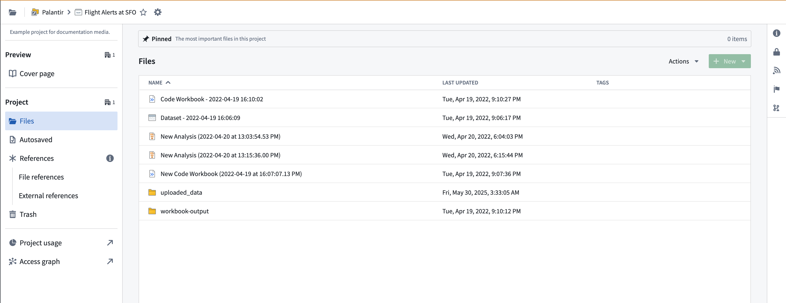

Compass is the filesystem for the Palantir platform. You can use Compass to organize and manage your projects, resources, and folders.
The most basic units in the platform are resources, which are analogous to a file in a traditional filesystem. You can store resources in projects, which are collaborative spaces that organize people, resources, and folders for a particular purpose. The Files page allows you to browse, share, secure, and organize your resources and projects in one place.

To find your resources, select Files in the workspace navigation sidebar. At the top of the page, you can use tabs to navigate between Portfolios, Projects, Your files (visible only to you), and Shared with you.
Below the tabs, quick filter cards allow you to filter the view by portfolios, projects, or Promoted items. If you need access to a project, select Request access to submit an access request.
You can further refine the file list using the Filters panel in the left sidebar. Filter options include resource type, status, portfolio, project, organization, and tag. Select a project to access the project dashboard, or create a new project.
When you open a project dashboard, you can view the following areas: Files, Autosaved, References (file and external), Trash, and Sensitive Data Scanner.
